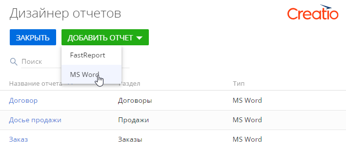
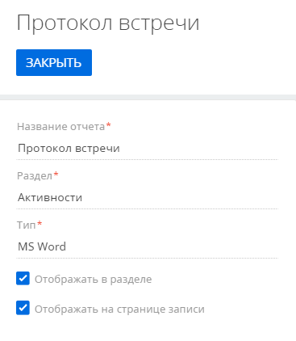
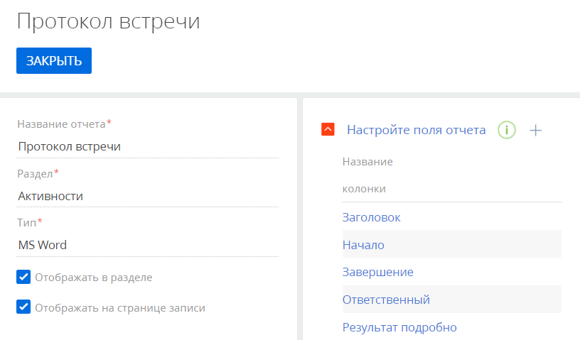
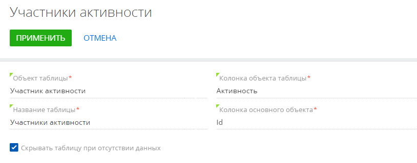
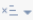
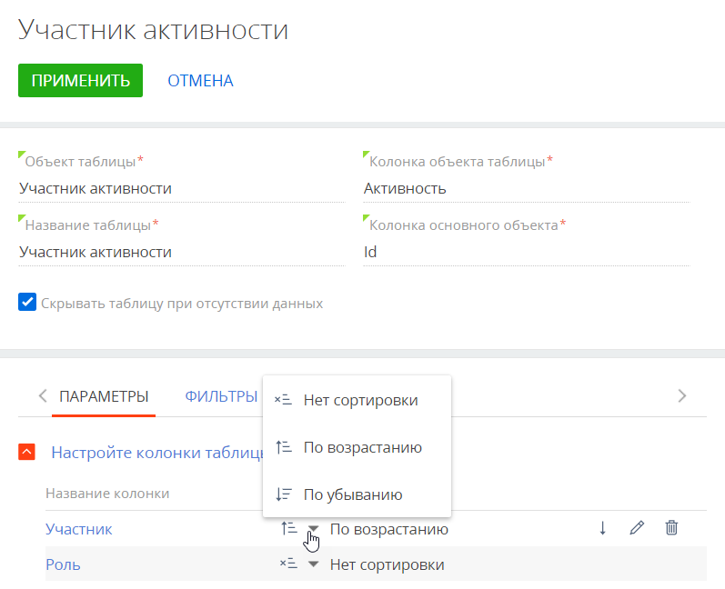
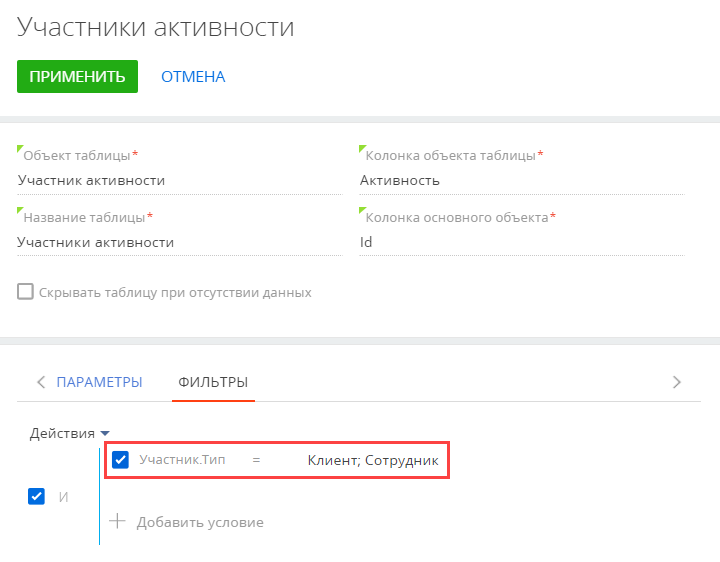
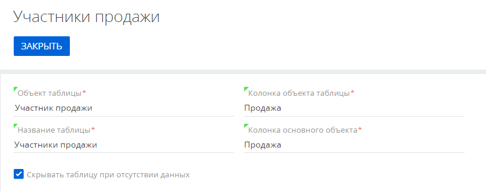
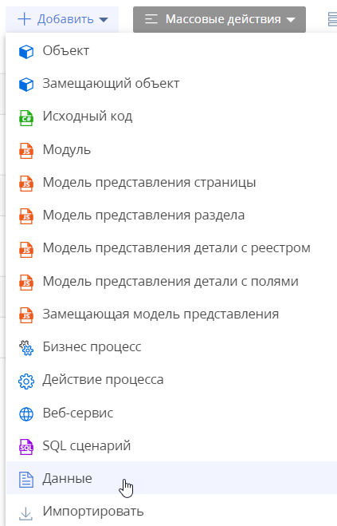
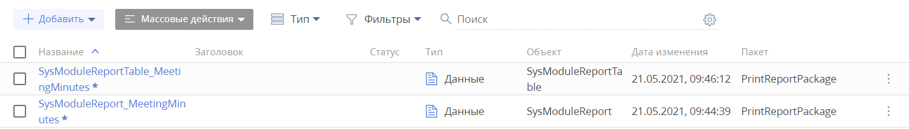

После того как вы установили плагин Creatio для Word, можно приступать к настройке отчетов.
Для добавления нового отчета потребуется выполнить следующие шаги:
- Добавить запись нового отчета в Creatio. Подробнее >>>
-
На странице добавленной записи настроить поля и таблицы, которые будут отображаться в отчете, на странице добавленной записи. Подробнее >>>
Добавить запись отчета Word в Creatio
- Перейдите в дизайнер системы по кнопке
 .
. -
В блоке “Настройка системы” нажмите “Настройка отчетов”.
Откроется раздел Дизайнер отчетов.
-
Кликните Добавить отчет —> MS Word (Рис. 1).
Рис. 1 — Добавление отчета Word - Введите название отчета, например, “Протокол встречи”.
- Выберите раздел, в котором должна быть доступна возможность распечатать отчет. Например, чтобы добавить отчет “Протокол встречи”, укажите раздел Активности.
-
Установите признаки Отображать в разделе и/или Отображать на странице записи, чтобы определить, где отчет Word будет доступен для печати (Рис. 2).
Рис. 2 — Добавление отчета “Протокол встречи”
Далее необходимо настроить поля и таблицы, которые будут отображаться в отчете.
Настроить содержимое отчета Word
Вы можете добавить в отчет как обычные данные, например, имя выбранного контакта или дату активности, так и табличные данные. В табличных данных можно отобразить записи, напрямую связанные с основным объектом отчета, а также записи объектов с обратной связью.
Настроить поля отчета
- Откройте запись отчета Word в разделе Настройка отчетов. Например, откройте ранее созданный отчет “Протокол встречи”.
- На странице записи в блоке Настройте поля отчета нажмите
 .
. -
В открывшемся окне выбора колонок выберите колонки, значения которых должны отображаться в отчете (Рис. 3). Например, чтобы отобразить в протоколе встречи название активности, выберите колонку Заголовок. Для отображения времени проведения активности выберите колонки Начало и Завершение и т. д.
Рис. 3 — Настройка полей отчета
В результате добавленные колонки можно будет использовать при настройке внешнего вида отчета в плагине Word.
При необходимости можно добавить в шаблон логические поля, например, признак Не использовать телефон для контакта или признак Подтверждена активности. Для настройки внешнего вида логических полей в итоговом документе используются специальные макросы, работа с которыми описана в статье Отчеты Word документации по разработке.
Настроить таблицы отчета
В таблицах можно отобразить ряд записей, связанных с основным объектом отчета. Отображаемые в таблице записи могут принадлежать объектам, напрямую связанным с объектом отчета, или объектам с обратной связью.
Настроить таблицу по данным связанного объекта
- Откройте запись отчета Word в разделе Настройка отчетов. Например, откройте ранее созданный отчет “Протокол встречи”.
- На странице отчета в блоке Настройте таблицы отчета нажмите .
-
На открывшейся странице табличных данных заполните следующие поля (Рис. 4):
- В поле Объект таблицы выберите объект, на основании данных которого необходимо сформировать таблицу. Например, чтобы добавить в протокол таблицу с перечнем участников активности, выберите объект “Участник активности”.
- В поле Название таблицы укажите заголовок таблицы, который будет отображаться при редактировании внешнего вида шаблона в плагине Word.
- В поле Колонка объекта таблицы укажите колонку, по которой таблица должна быть связана с основным объектом отчета. В нашем примере это колонка “Активность”.
- В поле Колонка основного объекта укажите колонку, по значению которой будет выполняться фильтрация записей в таблице. В большинстве случаев колонка объекта таблицы — это “Id”.
-
Установите признак Скрывать таблицу при отсутствии данных, чтобы пустая таблица не отображалась в итоговом документе.
Рис. 4 — Общие настройки таблицы “Участники активности”
- На вкладке Параметры настройте колонки, которые будут отображаться в таблице отчета. Для этого нажмите
 и в открывшемся окне выберите нужные колонки. Например, для отображения в таблице протокола участников встречи и их ролей выберите колонки Участник и Роль.
и в открывшемся окне выберите нужные колонки. Например, для отображения в таблице протокола участников встречи и их ролей выберите колонки Участник и Роль. -
Укажите порядок сортировки записей в таблице. Для этого выберите порядок сортировки “По возрастанию” или “По убыванию” в меню кнопки  рядом с названием колонки, по которой необходимо отсортировать записи в таблице. Например, установите для колонки “Участник” порядок сортировки “По возрастанию”, и список участников встречи будет отображаться в протоколе в алфавитном порядке (Рис. 5).
Рис. 5 — Настройка сортировки записей таблицы в отчетеЧтобы настроенные условия сортировки применились при печати отчета, необходимо, чтобы все колонки, по которым выполняется сортировка, были добавлены в шаблон отчета в плагине Word. Подробнее о добавлении табличных данных в шаблон в плагине читайте в статье Настроить отчет в плагине Word и загрузить в Creatio.
Также записи таблицы можно сортировать по нескольким колонкам. При этом сортировка будет выполнена по той колонке, которая расположена выше в группе настроек колонок таблицы.
-
При необходимости перейдите на вкладку Фильтры и постройте фильтр, условиям которого должны соответствовать записи таблицы. Например, чтобы в таблице отчета отображались только те участники, которые являются сотрудниками и клиентами вашей компании, постройте фильтр такого вида: “Участник.Тип = Клиент; Сотрудник” (Рис. 6).
Рис. 6 — Фильтрация записей в таблице - Нажмите Применить на странице настройки таблицы.
- Сохраните настройки на странице записи отчета.
В результате добавленные колонки таблицы можно будет использовать при настройке внешнего вида отчета в плагине Word.
Настроить таблицу по данным объекта с обратной связью
- Откройте запись отчета Word в разделе Настройка отчетов. Например, откройте ранее созданный отчет “Протокол встречи”.
- На странице отчета в блоке Настройте таблицы отчета нажмите .
-
На открывшейся странице табличных данных заполните следующие поля (Рис. 7):
- В поле Объект таблицы выберите объект, на основании данных которого необходимо сформировать таблицу. Например, чтобы добавить в протокол таблицу с участниками продажи, выберите объект “Участник продажи”.
- В поле Название таблицы укажите заголовок таблицы, который будет отображаться при редактировании внешнего вида шаблона в плагине Word.
- В поле Колонка объекта таблицы укажите колонку, по которой таблица связана с основным объектом отчета — активностью. В нашем примере это колонка “Продажа” объекта “Участник продажи”.
- В поле Колонка основного объекта укажите колонку основного объекта отчета, по которой с ним связана таблица. В нашем примере это колонка “Продажа” объекта “Активность”.
-
Установите признак Скрывать таблицу при отсутствии данных, чтобы пустая таблица не отображалась в итоговом документе.
Рис. 7 — Общие настройки таблицы “Участники продажи”
- На вкладке Параметры настройте колонки, которые будут отображаться в таблице отчета. Для этого нажмите
 и в открывшемся окне выбора выберите нужные колонки. Например, для отображения в таблице адресов участников встречи выберите колонки Контакт, Роль и Контрагент.
и в открывшемся окне выбора выберите нужные колонки. Например, для отображения в таблице адресов участников встречи выберите колонки Контакт, Роль и Контрагент. - Укажите порядок сортировки записей в таблице. Для этого выберите порядок сортировки “По возрастанию” или “По убыванию” в меню кнопки рядом с названием колонки, по которой необходимо отсортировать записи в таблице.
- При необходимости перейдите на вкладку Фильтры и постройте фильтр, условиям которого должны соответствовать записи таблицы. Например, чтобы в таблице отчета отображались только клиенты, постройте фильтр такого вида: “Контрагент.Тип = Клиент”.
- Нажмите Применить на странице настройки таблицы. Затем сохраните настройки на странице записи отчета.
В результате добавленные колонки таблицы можно будет использовать при настройке внешнего вида отчета в плагине Word.
После того как вы создали запись отчета в Creatio, можно перейти к настройке отчета в плагине Word.
Скопировать отчет Word
Копирование отчета позволяет сократить время настройки похожих отчетов.
При копировании в новый отчет сохраняется шаблон исходного отчета и следующие настройки:
- колонки,
- макросы,
- табличная часть,
- фильтры.
Скопировать отчет можно по кнопке Копировать в разделе Настройка отчетов.
Скопировать таблицу в рамках одного отчета можно по кнопке в строке с названием таблицы.
Перенести пакет с отчетом на другую среду разработки (опционально)
- Перейдите в дизайнер системы по кнопке
 .
. - В блоке “Конфигурирование разработчиком” перейдите по ссылке “Управление конфигурацией”.
- На панели инструментов реестра раздела нажмите Добавить —> Данные (Рис. 8).
Рис. 8 — Добавить тип конфигурационного элемента “Данные”
- Выполните привязку данных следующих элементов (Рис. 9):
- SysModuleReport_
ReportName — отчет. Подключается по Id отчета из таблицы dbo.SysModuleReport базы данных. Например, для отчета “Протокол встречи” это “SysModuleReport_ MeetingMinutes”. - SysModuleReportTable_
ReportName — табличная составляющая отчета. Подключается по Id отчета из таблицы dbo.SysModuleReportTable базы данных. Например, для отчета “Протокол встречи” это “SysModuleReportTable_ MeetingMinutes”.
Рис. 9 — Привязанные данные отчета в реестре раздела Конфигурация - SysModuleReport_
После этого можно выполнять перенос пакета с отчетом на другую рабочую среду.